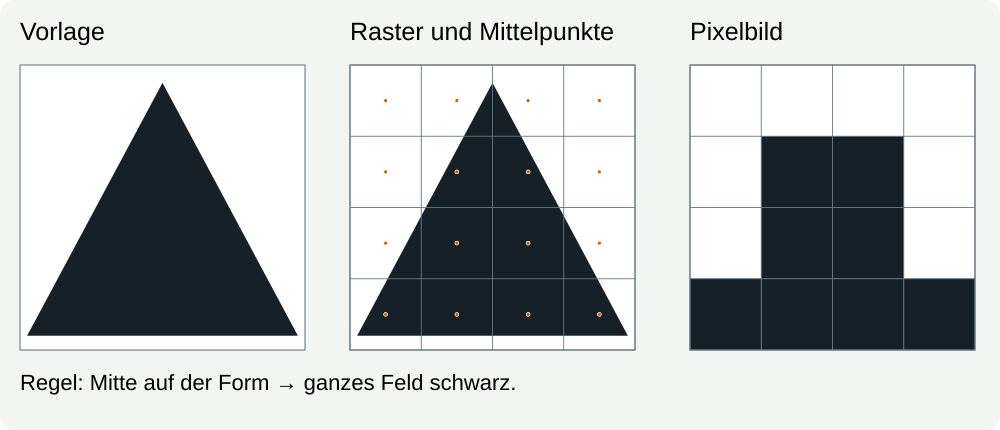
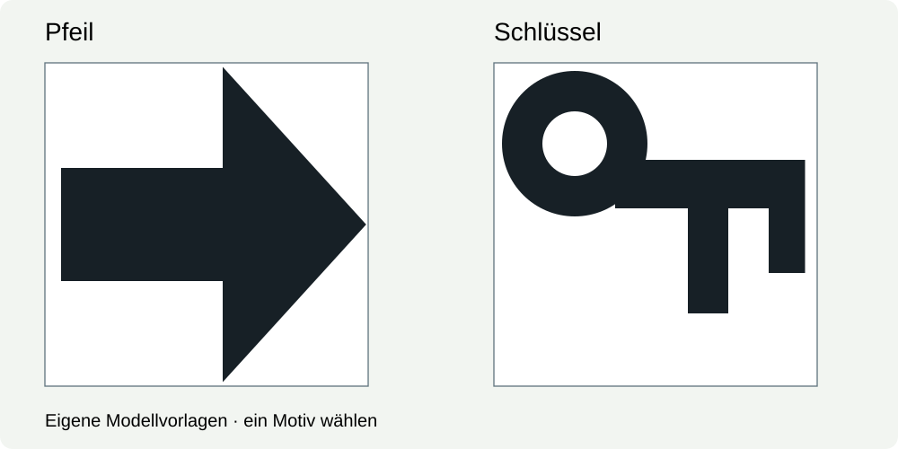
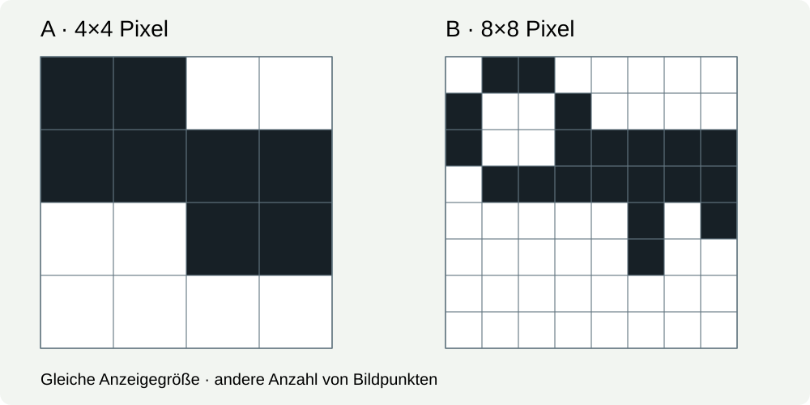

DAT-3 · Kann jemand dein Bild aus Bits bauen?
75 Minuten · erst allein, dann gegenseitig prüfen
Du möchtest ein kleines Bild übertragen. Die empfangende Person bekommt nur Bits und eure Bildvereinbarung. Sie darf deine Vorlage zuerst nicht sehen. Am Ende vergleichst du, was angekommen ist und welche Details bereits beim Rastern verloren gingen.
1 · Vom Umriss zu einzelnen Feldern · 15 Minuten
Ein Pixel ist ein Bildelement. In unserem Schwarzweißmodell bekommt jedes Feld eines Rasters genau einen Wert: weiß oder schwarz. Das Überführen einer Vorlage in solche einzelnen Felder heißt hier Diskretisieren.

Gemeinsame Regel: Wir betrachten die Mitte jedes Feldes. Liegt sie auf der schwarzen Form, wird das ganze Feld schwarz; sonst weiß. Eine Mitte genau auf dem Rand zählt bei uns als schwarz. Die kleinen Punkte in den Rasterhilfen markieren die Mittelpunkte und gehören nicht zum Motiv.
Sagt zuerst voraus, welche Felder beim Dreieck schwarz werden. Prüft dann die Darstellung rechts. Warum wird aus einer schrägen Kante eine Treppe? Weshalb lässt sich aus den Pixeln die ursprüngliche Kante nicht genau zurückgewinnen?
2 · Eine Bildvereinbarung testen · 15 Minuten
Wir vereinbaren 0 = weiß, 1 = schwarz. Gelesen wird oben links beginnend, jede Zeile von links nach rechts, danach die nächste Zeile. Zusätzlich brauchen wir Breite und Höhe in Pixeln.
Rekonstruiere dieses 4×4-Bild selbst. Male vier Zeilen mit je vier Feldern oder schreibe □ und ■ in gleich breiten Zeilen:
0100
1110
0100
0100
Die Zeilenumbrüche helfen nur beim Lesen. Was wäre ohne bekannte Breite an der ungetrennten Folge 0100111001000100 unklar? Formuliere eine mögliche andere Anordnung mit genauso vielen Bits.
Hilfe: Wo gehört das nächste Bit hin?
Zähle von links nach rechts bis zur vereinbarten Breite. Beginne dann eine neue Zeile. Notiere links die Zeilennummer. Für die erste Zeile brauchst du weiß, schwarz, weiß, weiß. Die übrigen Zeilen liest du selbst.
3 · Dein eigenes Bildpaket · 30 Minuten
A · Entscheiden und rastern – etwa 12 Minuten. Wähle eine der beiden eigenen Vorlagen. Lege selbst fest, ob du 4×4 oder 8×8 Pixel verwenden willst. Begründe deine Wahl mit einem Detail, das du erhalten möchtest. Verwende die Mittelpunktregel und übertrage die Vorlage Feld für Feld in ein eigenes Schwarzweißraster. Die Hilfsbilder zeigen noch keine fertige Pixellösung.

Rasterhilfen: Pfeil 4×4 · Pfeil 8×8 · Schlüssel 4×4 · Schlüssel 8×8.


Du kannst das Raster im bekannten Dokument als □/■-Zeilen schreiben, im bekannten Zeichenwerkzeug bearbeiten oder auf kariertem Papier zeichnen. Verwende bei Textdarstellung eine Schrift mit gleich breiten Zeichen, etwa Consolas oder Courier New. Eine leere Rastervorlage ist verfügbar. Das Rastern selbst ist deine Aufgabe.

B · Codieren – etwa 6 Minuten. Übersetze dein fertiges Raster in Bits. Dein Paket enthält Breite, Höhe, Farbzuordnung, Leserichtung und Bitfolge. Die Mittelpunktregel dokumentiert, wie du dein Raster hergestellt hast. Zum Decodieren des fertigen Rasters muss die andere Person sie nicht erneut anwenden. Gib Original und Pixelbild noch nicht weiter.
C · Zurückbauen – etwa 12 Minuten. Tauscht eure Pakete. Beide rekonstruieren allein das fremde Bild. Erst danach zeigt ihr eure Pixelbilder. Prüft Zeile für Zeile; benennt eine Abweichung mit Zeile und Spalte und repariert sie. Wenn alles übereinstimmt, prüft zusätzlich ein selbst ausgewähltes weißes und schwarzes Feld.
Zwischenhalt nach acht Minuten: Rasterwahl, Regel und mindestens die erste Rasterzeile sollen vorliegen. Hole dir bei Bedarf Hilfe für eine Randzelle. Die restlichen entscheidest du selbst.
4 · Was ging beim Rastern verloren? · 15 Minuten
Vergleicht nun auch mit den ursprünglichen Umrissen. Ein fehlerfrei übermitteltes Raster kann trotzdem Details der Vorlage verlieren.

Beide Bilder sind auf der Seite gleich groß. Nenne ein Detail, das die beiden Raster unterschiedlich wiedergeben. Auflösung meint hier die Anzahl der Pixel in Breite und Höhe. Ein größeres Anzeigen derselben Pixel ergänzt keine verlorenen Details.
Schreibe deine Abnahme: „Unsere Übertragung war …; beim Rastern ging … verloren / blieb … erhalten.“ Ergänze nach Rückmeldung eine Korrektur oder begründe, warum dein Raster nach der vereinbarten Regel bleiben kann.
Neuer Kurzfall: Breite 6, Höhe 2, 0 = weiß, 1 = schwarz, gleiche Leserichtung: 100001 111111. Rekonstruiere die zwei Zeilen. Warum wäre die Breite 4 eine andere Bildvereinbarung?
Ohne Partnerperson erhältst du von der Lehrperson das Ersatzpaket aus der Durchführung. Auch dann wird vor dem Vergleich tatsächlich decodiert. Bewahre eigenes Raster und Bits für DAT-4 auf.